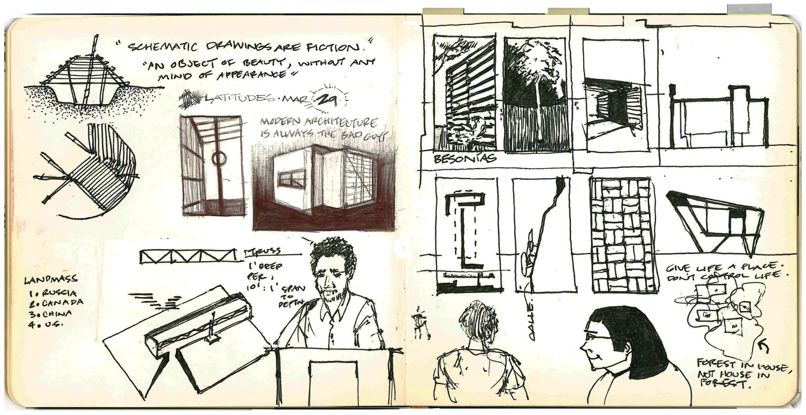
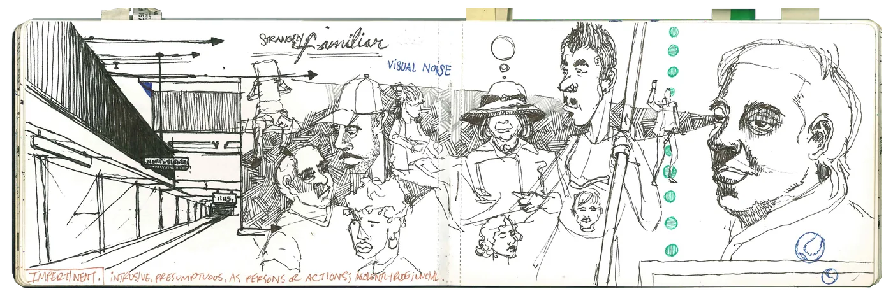
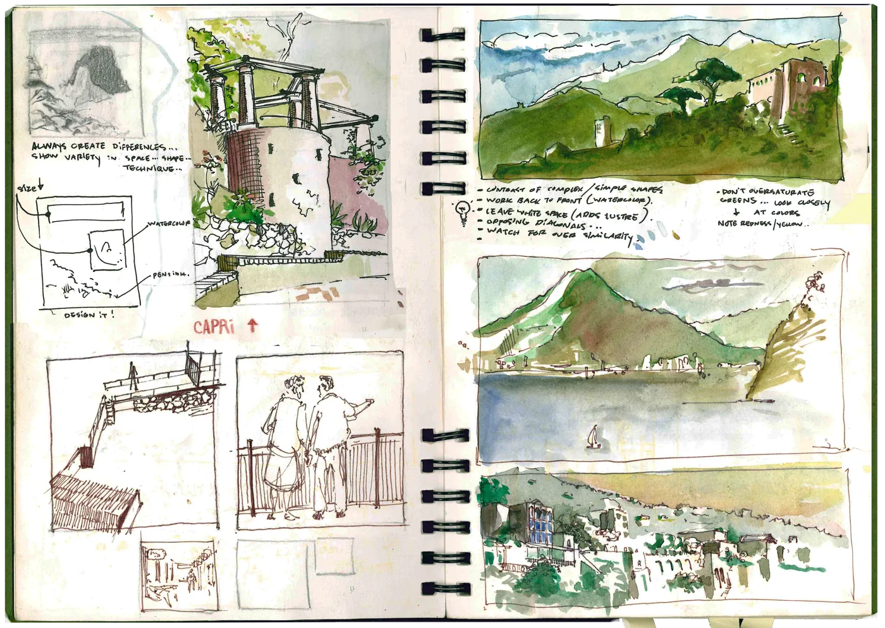
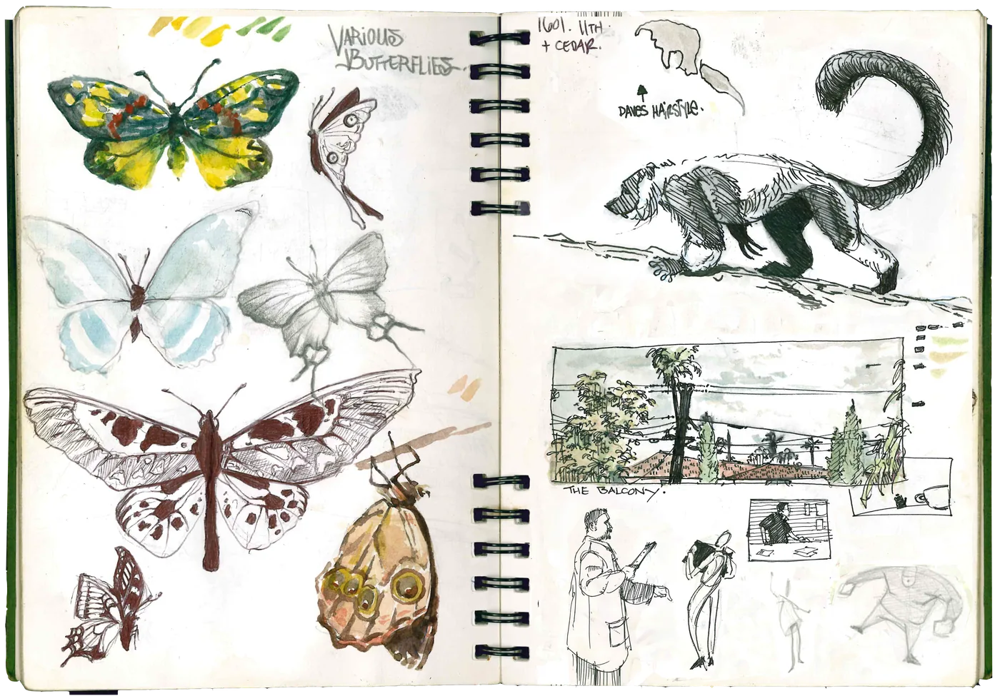
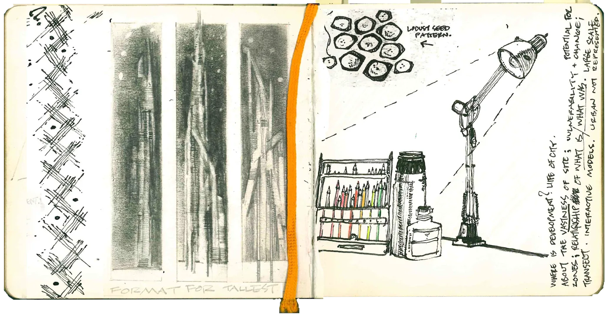
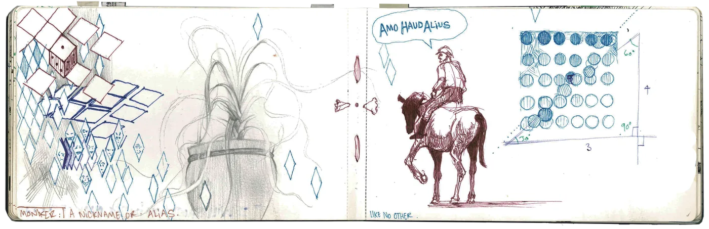
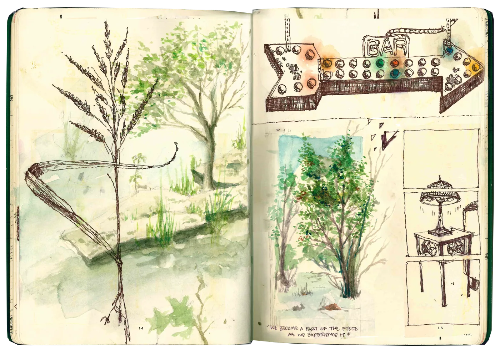
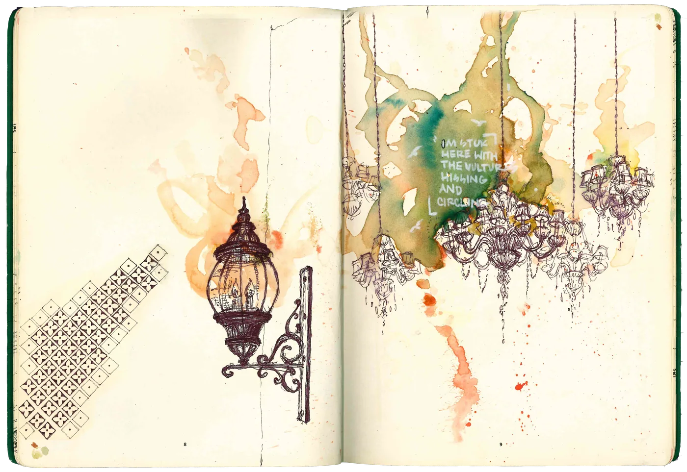
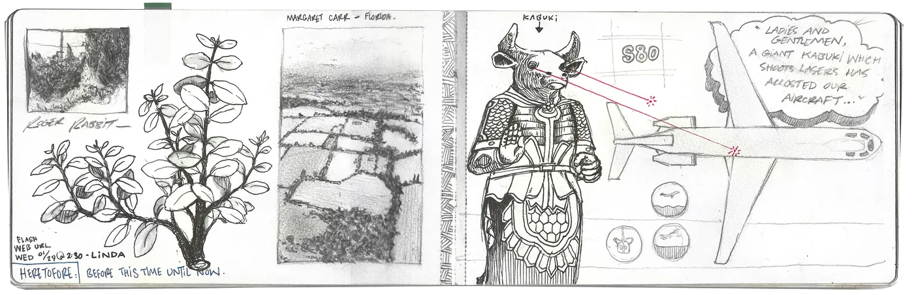

Creative Endeavors
Fast, rough, and constant — sketchbooks are where most of my thinking actually happens before anything gets near a screen. Ideas get worked out with a pencil first; software is just where they eventually land.








